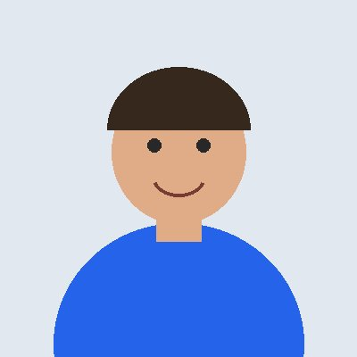

Om mig
Hej! Jag heter Sam Lind och studerar IT-säkerhet och mjukvarutestning vid Högskolan Dalarna i Borlänge.
Vem jag är

Hej! Jag heter Sam Lind och studerar IT-säkerhet och mjukvarutestning vid Högskolan Dalarna i Borlänge.
